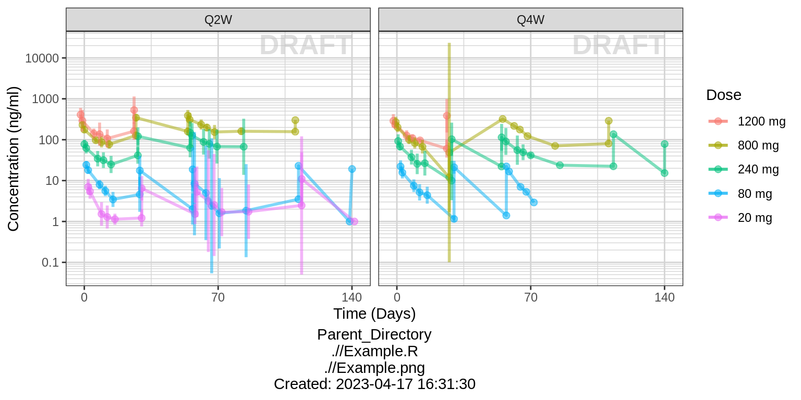
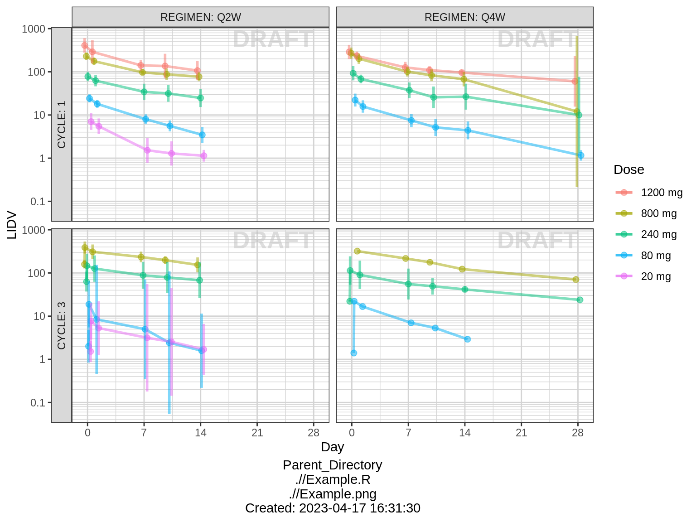

PK - Multiple Ascending Dose - Using Novartis dzz file
Overview
This document contains PK exploratory graphs and also the R code that generates these graphs, starting from the dzz and PPtmp files that are stored here:
Data specifications can be accessed on Datasets and Rmarkdown template to generate this page can be found on Rmarkdown-Template.
Setup
#clear variables and plots
rm(list=ls()) #clear all variables except Task00.start.time
#set seed
set.seed(123456)
#user name
user = Sys.getenv("USER")
## Ensure that no library from the user home will be loaded such that
## we run with the production packages only
.libPaths(grep("home", .libPaths(), value=TRUE, invert=TRUE))
.libPaths(grep("usr", .libPaths(), value=TRUE, invert=TRUE))
# add localLib to libPaths for locally installed packages
.libPaths(c("localLib", .libPaths()))
# will load from first filepath first, then look in .libPaths for more packages not in first path
# version matches package in first filepath, in the case of multiple instances of a package
#add key packages
library(ggplot2)
library(grid)
library(gridExtra)
library(tidyr)
library(dplyr)
library(lubridate)
#ggplot settings
theme_set(theme_bw(base_size=12))
#xgx functions
source("../R/xgx_packages_functions.R")Load in data from dzz (concentrations) and format for plotting
LOQassay = 1
drug1 = "ABC123"
drug2 = "DEF456"
#load data located here:
d = read.csv("../Data/dzz_PKConc.csv",stringsAsFactors = FALSE)
#create columns with dosing regimen information, based on ARM
d = d %>%
mutate(DOSSTR = stringr::str_replace(ARM,"Phase Ib? ",""),
DRG1STR = stringr::str_replace(DOSSTR,paste0(drug1," "),""),
DRG1STR = stringr::str_extract(DRG1STR,"^\\d* *mg Q\\dW"),
DRG1DOS0 = as.numeric(stringr::str_extract(DRG1STR,"\\d*")),
DRG1REG = stringr::str_extract(DRG1STR,"Q\\dW"),
DRG2STR = stringr::str_extract(DOSSTR,paste0(drug2," \\d* *mg Q\\dW")),
DRG2STR = stringr::str_replace(DRG2STR,paste0(drug2," "),""),
DRG2DOS0 = as.numeric(stringr::str_extract(DRG2STR,"\\d*")),
DRG2REG = stringr::str_extract(DRG2STR,"Q\\dW"),
Comed = ifelse(is.na(DRG2DOS0),"monotherapy","combination"),
DRG1.DRG2 = paste(DRG1DOS0,Comed))
#create columns with time and normalized PK
d = d %>%
filter(PCDTC!="") %>%
group_by(SUBJID) %>%
mutate(CYCLE = as.numeric(substr(VISIT,7,8)),
NOMTIMEH = (CYCLE-1)*28*24+TMTPT,
DATE = ymd_hms(PCDTC),
DATE0 = ymd_hms(first(PCDTC)),
TIMEH = (DATE-DATE0)/3600,
RESN = as.numeric(RESN),
CENS = RESN<LOQassay,
RESN = ifelse(CENS,LOQassay,RESN),
RESNorm = RESN/DRG1DOS0) %>%
ungroup() %>%
filter(NOMTIMEH>0)
#create simplified column names for plotting
d = d %>%
arrange(DRG1DOS0,desc(DRG1REG)) %>%
mutate(ID = SUBJID,
DOSElabel = factor(DRG1STR,levels=rev(unique(DRG1STR))), #for proper ordering
DOSE0 = DRG1DOS0,
DOSE0label = paste(DOSE0,"mg"),
DOSE0label = factor(DOSE0label,levels=rev(unique(DOSE0label))),
REG = DRG1REG,
NOMTIME = NOMTIMEH,
TIME = TIMEH,
CONC=RESN,
CONCnorm = RESNorm)Load in data from PPtmp (NCA) and format for plotting
nca = read.csv("../Data/PPtmp_NCA.csv",stringsAsFactors = FALSE)
#create columns with dosing regimen information, based on ARM
nca = nca %>%
mutate(DOSSTR = stringr::str_replace(ARM,"Phase Ib? ",""),
DRG1STR = stringr::str_replace(DOSSTR,paste0(drug1," "),""),
DRG1STR = stringr::str_extract(DRG1STR,"^\\d* *mg Q\\dW"),
DRG1DOS0 = as.numeric(stringr::str_extract(DRG1STR,"\\d*")),
DRG1REG = stringr::str_extract(DRG1STR,"Q\\dW"),
DRG2STR = stringr::str_extract(DOSSTR,paste0(drug2," \\d* *mg Q\\dW")),
DRG2STR = stringr::str_replace(DRG2STR,paste0(drug2," "),""),
DRG2DOS0 = as.numeric(stringr::str_extract(DRG2STR,"\\d*")),
DRG2REG = stringr::str_extract(DRG2STR,"Q\\dW"),
Comed = ifelse(is.na(DRG2DOS0),"monotherapy","combination"),
DRG1.DRG2 = paste(DRG1DOS0,Comed),
PPORRESNnorm = PPORRESN/DRG1DOS0)
#create simplified column names
nca = nca %>%
arrange(DRG1DOS0,desc(DRG1REG)) %>%
mutate(ID = SUBJID,
DOSElabel = factor(DRG1STR,levels=unique(DRG1STR)), #for proper ordering
DOSE0 = DRG1DOS0,
REG = DRG1REG) Provide an overview of the data
Concentration over time, faceted by regimen, colored by dose
gg = ggplot(data = d, aes(x = NOMTIME, y = CONC, color = DOSE0label, group=DOSE0label))
gg = gg + stat_summary(geom = "errorbar", width = 0.1, size = .5,
fun.data = function(y){
y = stats::na.omit(y)
data.frame(
y = median(y),
ymin = quantile(y,.05),
ymax = quantile(y,.95)
)},alpha=.5) +
stat_summary(geom = "point", size = 2, fun.y = mean,alpha=.5) +
stat_summary(geom = "line", size = 1, fun.y = mean,alpha=.5)
gg = gg + scale.y.log10() + annotation_logticks(base = 10, sides = "l", color = rgb(0.5,0.5,0.5))
gg = gg + scale_x_units(units.input = "h",units.output="m",t.end = 6,increment=1)
gg = gg + ylab("Conc (ug/ml)")
gg = gg + labs(color="Dose (mg)")
gg = gg + facet_grid(~REG)
print(gg)
Concentration over time, faceted by regimen and cycle number, colored by dose
gg = gg
gg = gg %+% filter(d,CYCLE %in% c(1,3))
gg = gg + aes(x=TMTPT,y=CONC)
gg = gg + facet_grid(CYCLE~REG,labeller=label_both,switch="y")
gg = gg + scale_x_units(units.input = "h",units.output="d",t.end = 28,increment=7)
gg = gg + ylab("Conc (ug/ml)")
gg = gg + ggtitle("PK by Cycle")
print(gg)
Assess the dose linearity of exposure
Dose normalized concentration
gg = ggplot(data = d, aes(x = NOMTIME, y = CONCnorm, color = DOSE0label, group=DOSE0label))
gg = gg + stat_summary(geom = "errorbar", width = 0.1, size = .5,
fun.data = function(y){
y = stats::na.omit(y)
data.frame(
y = median(y),
ymin = quantile(y,.05),
ymax = quantile(y,.95)
)},alpha=.5) +
stat_summary(geom = "point", size = 2, fun.y = mean,alpha=.5) +
stat_summary(geom = "line", size = 1, fun.y = mean,alpha=.5)
gg = gg + scale.y.log10() + annotation_logticks(base = 10, sides = "l", color = rgb(0.5,0.5,0.5))
gg = gg + scale_x_units(units.input = "h",units.output="m",t.end = 6,increment=1)
gg = gg + labs(color="Dose (mg)")
gg = gg + facet_grid(~REG)
gg = gg + ylab("Normalized Conc (ug/ml/mg)")
gg = gg + ggtitle("Normalized Concentration")
print(gg)
Noncompartmental Analysis
nca.filter = nca %>%
filter(WNLPARM %in% c("AUCINF_obs","AUClast","AUCtau","Cmax"))
g = ggplot(nca.filter,aes(x=DOSE0,y=PPORRESNnorm,group=DOSE0))
g = g + geom_boxplot(outlier.shape=NA)
g = g + geom_smooth(aes(group=NULL),show.legend = FALSE,se=FALSE)
g = g + geom_jitter(width=0,alpha=.3)
g = g + facet_grid(WNLPARM~REG,scales="free_y",switch="y")
g = g + scale.y.log10(.5) + annotation_logticks(base = 10, sides = "l", color = rgb(0.5,0.5,0.5))
g = g + scale_x_log10(breaks=unique(d$DOSE0))
g = g + labs(x="First Dose (mg)",
y="Normalized value (ug/ml/mg or ug/ml*d/mg)")
g = g + ggtitle("Normalized NCA")
print(g)
Explore variability
Spaghetti, grouped by dose
gg = ggplot(data = d, aes(x=TIME, y=CONC, group=ID))
gg = gg + geom_line(mapping=aes(group=ID),alpha = 0.5)
gg = gg + geom_point(alpha = 0.5)
gg = gg + scale.y.log10() + annotation_logticks(base = 10, sides = "l", color = rgb(0.5,0.5,0.5))
gg = gg + scale_x_units(units.input = "h",units.output="m",t.end = 6,increment=1)
gg = gg + ylab("Conc (ug/ml)")
gg = gg + theme(legend.position="none")
gg = gg + facet_grid(REG~DOSE0,switch="y")
print(gg)
Explore irregularities in profiles
Individual profiles
gg = ggplot(data = d, aes(x=TIME, y=CONC, group=ID))
gg = gg + geom_line()
gg = gg + geom_point()
gg = gg + scale.y.log10() + annotation_logticks(base = 10, sides = "l", color = rgb(0.5,0.5,0.5))
gg = gg + scale_x_units(units.input = "h",units.output="m",t.end = 6,increment=1)
gg = gg + ylab("Conc (ug/ml)")
gg = gg + theme(legend.position="none")
gg = gg + facet_wrap(~DOSElabel+ID)
print(gg)
R Session Info
sessionInfo()## R version 3.4.3 (2017-11-30)
## Platform: x86_64-pc-linux-gnu (64-bit)
## Running under: Red Hat Enterprise Linux Server 7.4 (Maipo)
##
## Matrix products: default
## BLAS/LAPACK: /CHBS/apps/intel/17.4.196/compilers_and_libraries_2017.4.196/linux/mkl/lib/intel64_lin/libmkl_gf_lp64.so
##
## locale:
## [1] LC_CTYPE=en_US.UTF-8 LC_NUMERIC=C
## [3] LC_TIME=en_US.UTF-8 LC_COLLATE=en_US.UTF-8
## [5] LC_MONETARY=en_US.UTF-8 LC_MESSAGES=en_US.UTF-8
## [7] LC_PAPER=en_US.UTF-8 LC_NAME=C
## [9] LC_ADDRESS=C LC_TELEPHONE=C
## [11] LC_MEASUREMENT=en_US.UTF-8 LC_IDENTIFICATION=C
##
## attached base packages:
## [1] grid stats graphics grDevices utils datasets methods
## [8] base
##
## other attached packages:
## [1] lubridate_1.7.1 survival_2.41-3 DT_0.2 RxODE_0.6-1
## [5] bindrcpp_0.2 haven_1.1.0 readr_1.1.1 readxl_1.0.0
## [9] xtable_1.8-2 tidyr_0.7.2 caTools_1.17.1 zoo_1.8-0
## [13] dplyr_0.7.4 ggplot2_2.2.1 gridExtra_2.3
##
## loaded via a namespace (and not attached):
## [1] purrr_0.2.4 reshape2_1.4.3 splines_3.4.3
## [4] lattice_0.20-35 colorspace_1.3-2 htmltools_0.3.6
## [7] yaml_2.1.16 rlang_0.1.6 pillar_1.0.1
## [10] glue_1.2.0 RColorBrewer_1.1-2 binom_1.1-1
## [13] bindr_0.1 plyr_1.8.4 stringr_1.2.0
## [16] munsell_0.4.3 gtable_0.2.0 cellranger_1.1.0
## [19] htmlwidgets_0.9 codetools_0.2-15 evaluate_0.10.1
## [22] memoise_1.1.0 labeling_0.3 knitr_1.18
## [25] forcats_0.2.0 rex_1.1.2 markdown_0.8
## [28] Rcpp_0.12.14 scales_0.5.0 backports_1.1.2
## [31] jsonlite_1.5 hms_0.4.0 digest_0.6.13
## [34] stringi_1.1.3 rprojroot_1.3-1 tools_3.4.3
## [37] bitops_1.0-6 magrittr_1.5 lazyeval_0.2.1
## [40] tibble_1.4.1 pkgconfig_2.0.1 Matrix_1.2-12
## [43] rsconnect_0.8.5 assertthat_0.2.0 rmarkdown_1.8
## [46] R6_2.2.2 compiler_3.4.3